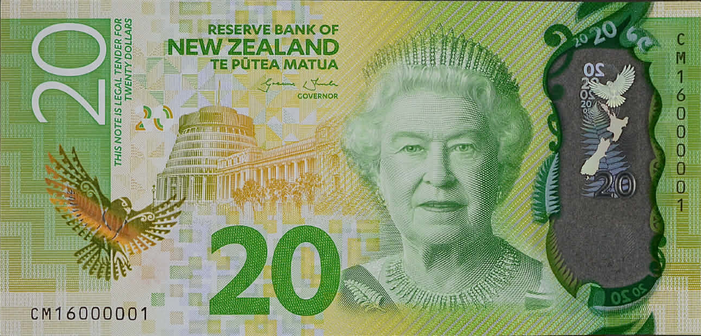

Gambling in New Zealand

Grab and drag the noteNote design © Reserve Bank of New Zealand · Photo: Aventine Coins & Bullion
How often does a spin pay?
A spin can pay a prize smaller than the bet. Mayan Blaze is an online pokie offered to NZ players.
Mayan Blaze · any payoutAbout 1 in 3 spins
RubyPlay gives a 32.6% hit rate. 100 ÷ 32.6 = 3.07 spins per hit on average. The NZ online listing gives the same rate. A payout can be less than your bet. A hit has no fixed schedule.
RubyPlay · game specificationsWildz · NZ listing and game specificationsWhere does $100 go?
Across NZ pub and club pokies in 2024/25, players could bet their winnings again. Each new bet counted towards the total.
Paid back in prizes per $100 bet$91.04
$10,312,101,221 in prizes ÷ $11,327,445,320 bet × $100. This is an average across machines.
DIA · annual expenditure workbookLost per $100 bet$8.96
$1,015,358,561 in player losses ÷ $11,327,445,320 bet × $100.
DIA · annual expenditure workbookHow much did players lose?
Bets minus prizes across four NZ gambling sectors in 2024/25.
Total player losses$2.71 billion
Pub and club pokies: $1,015,358,561 + Lotto NZ: $754,261,000 + TAB: $393,386,981 + Casinos: $545,124,093 = $2,708,130,635. Offshore sites are outside this total.
DIA · annual expenditure workbookPub and club pokies$1,015m
DIA records $1,015,358,561 in losses for Pub and club pokies in 2024/25. Rounded to the nearest million.
DIA · annual expenditure workbookLotto NZ$754m
DIA records $754,261,000 in losses for Lotto NZ in 2024/25. Rounded to the nearest million.
DIA · annual expenditure workbookCasinos$545m
DIA records $545,124,093 in losses for Casinos in 2024/25. Rounded to the nearest million.
DIA · annual expenditure workbookTAB$393m
DIA records $393,386,981 in losses for TAB in 2024/25. Rounded to the nearest million.
DIA · annual expenditure workbookWhat does that look like locally?
Christchurch pub and club pokies, April to June 2026. The machine count is from 30 June.
1,219 machines across 73 venues$26.35m lost
$26,347,837.82 lost ÷ 1,219 licensed machines = $21,614.31 lost per machine that quarter, on average.
DIA · quarterly machine and venue dataWho gets pokie grants?
Schools, clubs and other groups apply for grants. The records show which applications were approved or declined.
Manaia School · kapa haka$4,500 approved
In 2021, Pub Charity Limited approved $4,500 for kapa haka in South Taranaki. A local grant record cannot trace a particular player’s money.
DIA · Class 4 grant applicationsWho plays, and who reports harm?
NZ Gambling Survey, 2023/24. People aged 15+ answered about the previous 12 months. The groups can overlap.
GambledAbout 64 in 100
Health NZ estimates 64.1% of NZ residents aged 15+. The 95% confidence interval is 62.5–65.7%. The headline rounds to the nearest person per 100.
Health NZ · survey question and resultsGambled onlineAbout 31 in 100
Health NZ estimates 31.1% of NZ residents aged 15+. The 95% confidence interval is 29.6–32.6%. The headline rounds to the nearest person per 100.
Health NZ · survey question and resultsUsed an overseas gambling siteAbout 4 in 100
Health NZ estimates 3.6% of NZ residents aged 15+. The 95% confidence interval is 2.9–4.5%. The headline rounds to the nearest person per 100.
Health NZ · survey question and resultsShowed some risk of harmAbout 8 in 100
Health NZ estimates 8.3% of NZ residents aged 15+. The 95% confidence interval is 7.4–9.3%. The headline rounds to the nearest person per 100.
Health NZ · survey question and resultsReported harm in their household or wider familyAbout 9 in 100
Health NZ estimates 8.9% of NZ residents aged 15+. The 95% confidence interval is 7.9–9.9%. The headline rounds to the nearest person per 100.
Health NZ · survey question and resultsWhat did offshore sites pay in NZ tax?
From 1 July 2024 to 21 April 2026, Inland Revenue recorded two kinds of tax on gambling supplied to NZ residents.
Offshore gambling duty$104.8m
$62,746,621.07 + $42,023,597.51 = $104,770,218.58. The second period is a partial financial year.
Inland Revenue · table 2GST$119.2m
$73,408,303.41 + $45,828,660.70 = $119,236,964.11. These figures measure tax collected.
Inland Revenue · table 1